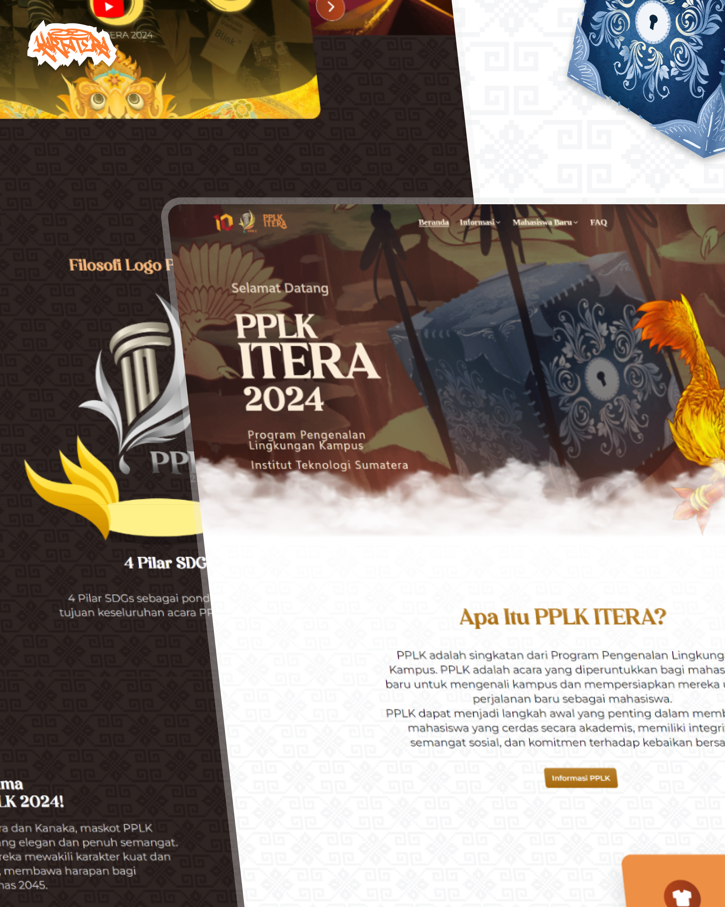
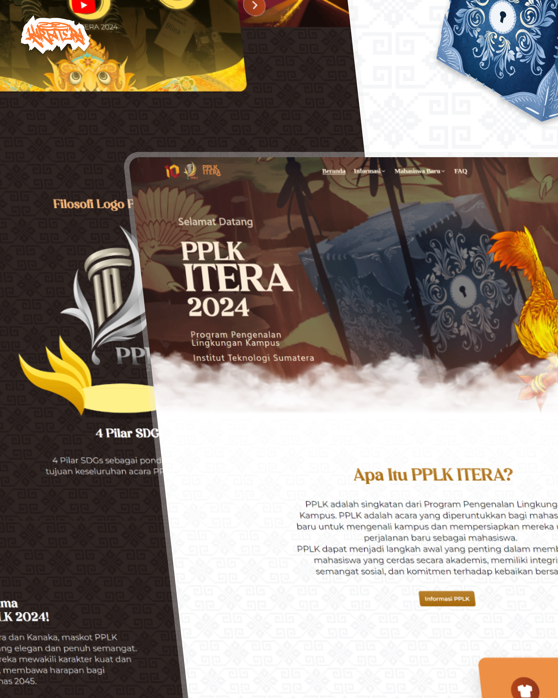

Who Am I?
My name Cornelius Linux. Born in a smoll city,
Pringsewu, Lampung, Indonesia. I'm currently a college student at
ITERA✨.
When i was ~10yo, I'd like to make DLL Injector for game hax with
VBS. I did that because it was fun to play with game security. I
love to help other people to know about programming❤️.
Projects
 


Website Program Pengenalan Lingkungan Kampus (PPLK) ITERA
2024
This is the most valueable and exciting project among many more
project i have ever had. At PPLK 2024, i was chosen to be the head
of Implementation Technology Division. We made a website that used
by approximately 5000 users. This website created
in just 1 month with so many features in it.
The most valuable feature is assignment collection and 3D Wall
Magazine. So the new students can submit their task on the website
easily. After all of the task on their group is complete, they can
upload their magazines to make a 3D Wall Magazine.
You can check all my projects on my
Github Profile